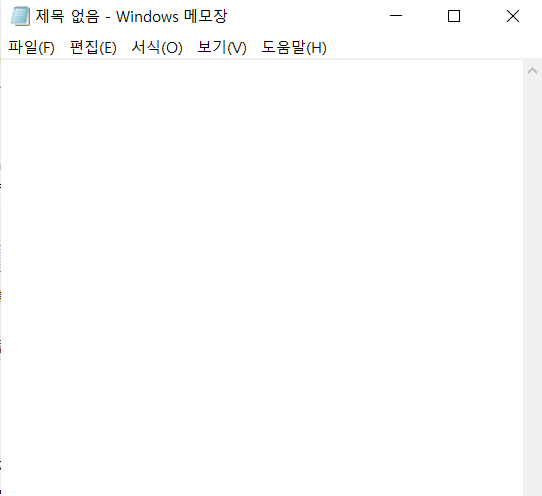
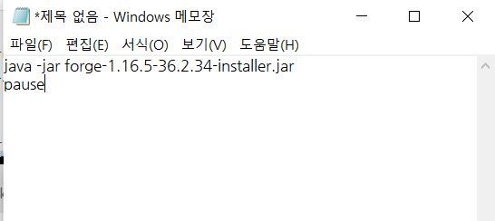
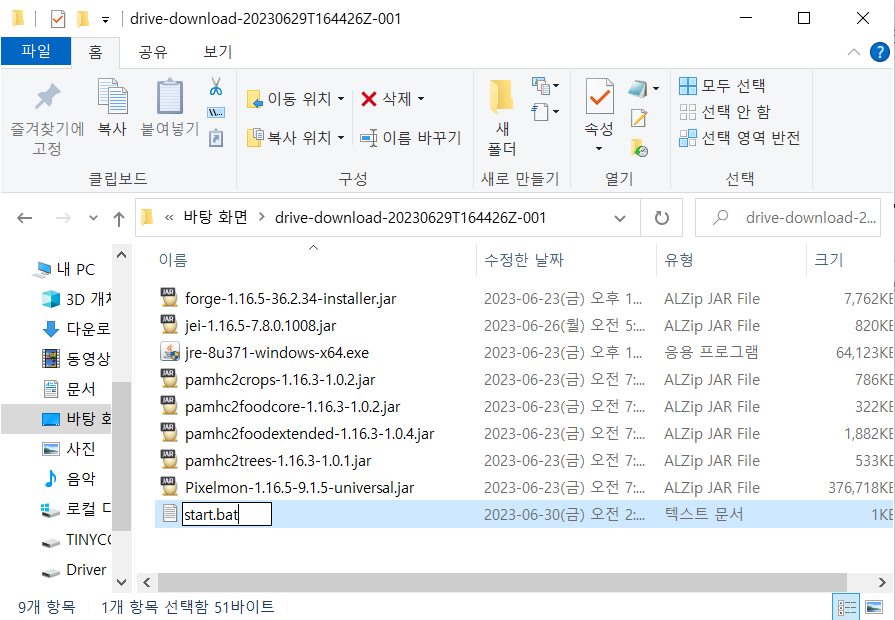
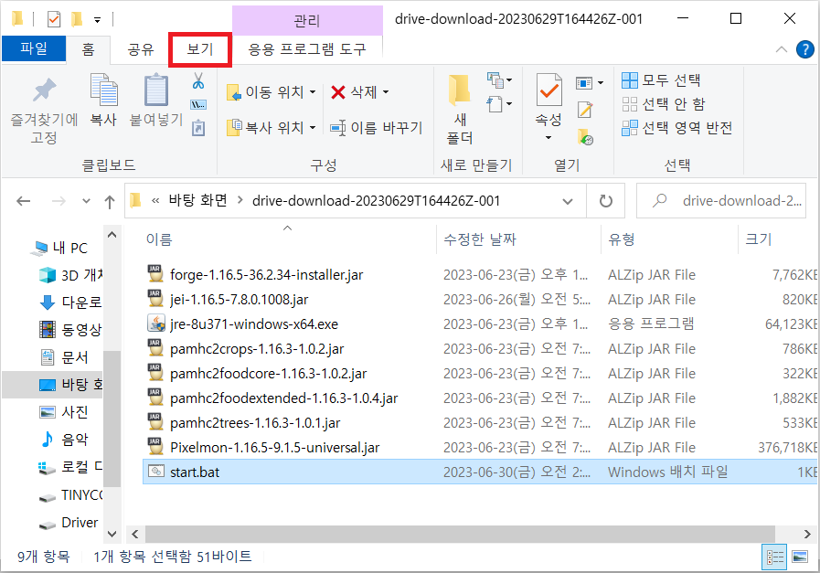
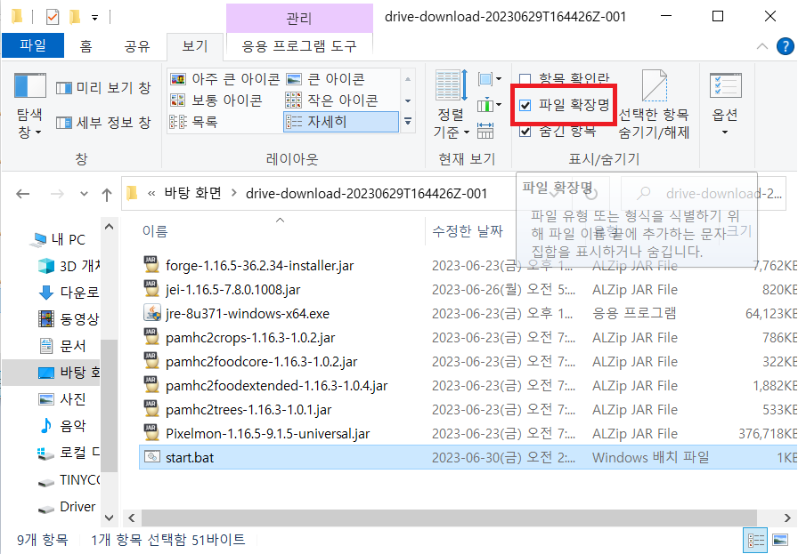

만약 Java(TM) Platform SE binary가 없다면
메모장을 켜셈
그리고 이 문구를 복붙 ㄱㄱ
java -jar forge-1.16.5-36.2.34-installer.jar
pause
파일들을 다운로드한 경로에 start라는 이름으로 텍스트 파일을 저장하셈
그리고 파일 이름을 start.txt에서 start.bat으로 바꾼다
만약 확장자가 안 뜬다면
상단 '보기'누르고
파일 확장명 체크 표시 하셈
암튼 그러고 start.bat 실행 ㄱㄱ